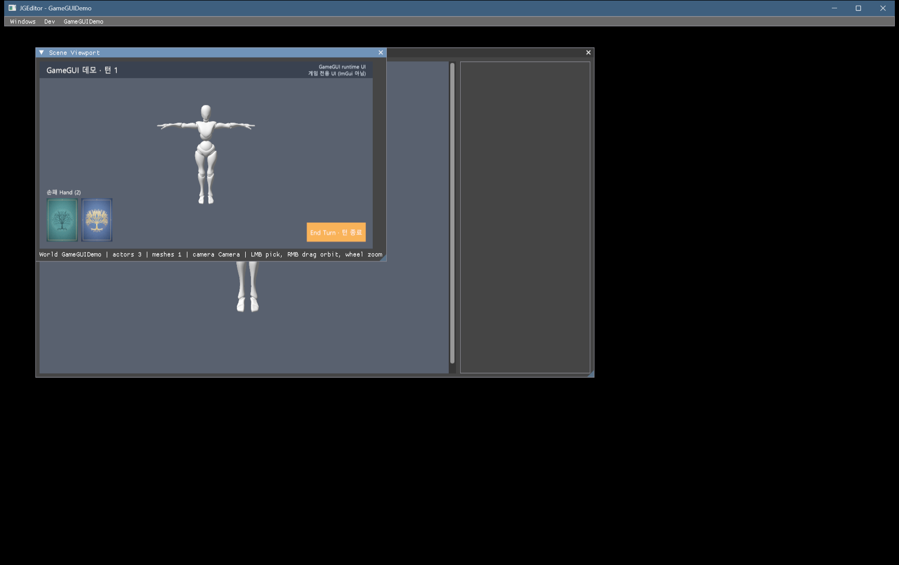
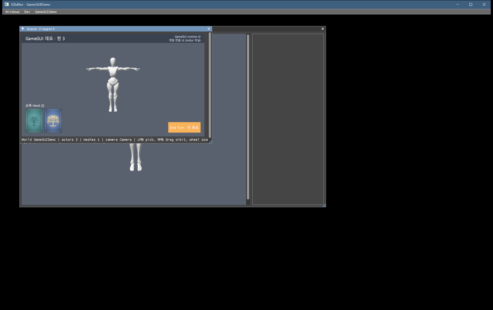

대체됨 (10-01 오전). 이 보고서의 구조(별도 GameGUI 모듈)는 같은 날 오전 사용자 지시로 GameFrameWorks 안 JGGameWidget(CommonUI식)으로 바뀌었습니다. 최신 보고서는 GameUI_진행보고_2026-10-01.html입니다. 아래 2D 그리기 · 글꼴 · 요소 내용은 그대로 유효합니다.
GameGUI 진행 보고
요약. 게임이 플레이어에게 보여 주는 UI를 맡는 새 모듈 GameGUI를 만들었습니다. ImGui(GUI 모듈)는 에디터와 개발 도구 전용으로 그대로 두고, GameGUI는 ImGui에도 GameFrameWorks에도 의존하지 않습니다. 네 단계를 모두 끝냈습니다: 설계 문서 → 기반(Graphics 2D 그리기 경로, 한글 글꼴, 이미지 파일, 포인터 입력) → 최소 요소(캔버스, 이미지, 글자, 버튼) → 검증.
결과. 헤드리스 셀프 테스트 64/64. 검증용 게임을 에디터에서 띄우니 월드 위에 HUD(반투명 띠, 한글 글자, 카드 2장, 버튼)가 보였습니다. 창에 실제 클릭을 보내 확인한 결과도 기대와 같습니다. 버튼을 누르면 턴이 올라가고, UI 위를 누르면 월드 피킹이 일어나지 않으며, UI 밖을 누르면 평소처럼 피킹됩니다. 기존 회귀 테스트도 모두 통과했습니다. 본 트리에 반영해 전체 빌드(오류 0)한 뒤 같은 검증을 다시 돌렸고, 화면 캡처가 워크트리 결과와 바이트까지 같았습니다.
남은 일. 커밋(사용자)입니다. 다음 기능(드래그, 줄바꿈, 레이아웃 그룹 등)은 게임에서 요구가 생길 때 보류 목록에서 고르면 됩니다. 새로 정할 것은 없습니다.
gamegui.selftest (GPU 없이, 6그룹)1. 화면
검증용 게임 GameGUIDemo(엔진 밖)를 에디터 프로젝트 모드로 띄운 Scene Viewport입니다. X Bot이 있는 월드 위에 게임 모듈이 만든 HUD가 그려져 있습니다.


색이 코드에 적은 값보다 옅게 보입니다. 출력 텍스처(FP16)가 선형 값으로 표시되며 sRGB로 바뀌기 때문이고, ImGui 화면도 같습니다. 색 공간은 Graphics 결정 D-3을 따르게 됩니다.
2. 구조
게임 모듈 (엔진 밖)
ConnectModule("GameGUI") → 캔버스 생성 → AddChild<PGameGUIButton> → OnClicked에 게임 명령을 연결. 그리기는 부르지 않습니다.
GameGUI 모듈
캔버스(기준 해상도·배율·정렬 순서) · 요소 트리(앵커·피벗) · Image · Text · Button · 글꼴 아틀라스 · 그리기 목록. 의존은 Core · Asset · Graphics뿐입니다.
호스트 (에디터 Scene Viewport)
매 프레임 월드를 그린 뒤 같은 출력 텍스처 위에 캔버스를 그립니다. 마우스 입력은 GameGUI에 먼저 주고, UI가 받으면 피킹·궤도·줌을 하지 않습니다.
Graphics
새 2D 그리기 IJGGraphicsCommand::Draw(H2DDrawArguments). 정점과 인덱스를 매 프레임 올리고, 배치마다 텍스처와 클립을 바꾸고, 알파 블렌드를 쓰는 내장 셰이더 draw2d.hlsl로 그립니다. 머터리얼 경로는 건드리지 않았습니다.
나중에 단독 실행 호스트(D-5, 보류)가 생겨도 같은 두 호출(RenderCanvases, HandlePointer)만 부르면 됩니다. 게임 코드는 바뀌지 않습니다.
3. 만든 것
| 단계 | 내용 | 상태 |
|---|---|---|
| 설계 | 요구사항(보드·카드 게임 공통), 구조와 의존 방향, 2D 경로, 글꼴·이미지·입력, 좌표 규칙(배율 = min(타깃/기준), 요소 사각형 = 부모 + 앵커×부모 크기 + 위치 − 피벗×크기), 호스트, 검증 기준, "나중" 목록. 구현 뒤 달라진 점은 §10에 적었습니다. | 완료 |
| 기반 ① 2D 경로 | H2DVertex(32바이트) · H2DDrawCommand · H2DDrawArguments, DX12 구현(알파 블렌드, 컬링 없음, 배치마다 텍스처·시저, 끝나면 상태 복원), 동적 정점·인덱스 버퍼, 내장 셰이더 | 완료 |
| 기반 ② 글꼴 | stb_truetype. 글자와 픽셀 크기별로 글리프를 캐시하고, 1024×1024 아틀라스에 줄 단위로 배치합니다. 자간과 줄바꿈(\n)을 지원하고 UTF-8을 해석합니다. 한글도 됩니다(개발용 기본 글꼴은 시스템 맑은 고딕) | 완료 |
| 기반 ③ 이미지 | PNG·JPG 파일(stb_image)을 RGBA8 텍스처로 읽습니다. 경로별로 캐시합니다 | 완료 |
| 기반 ④ 입력 | 호스트가 넣는 포인터 이벤트(Move/Down/Up/Wheel/Leave). 위에 있는 요소부터 판정하고, 누른 요소가 뗄 때까지 입력을 잡습니다(캡처). 처리했는지를 반환합니다 | 완료 |
| 최소 요소 | 캔버스, Image(패널로도 사용), Text(정렬·색·크기), Button(보통·호버·누름 색, 라벨, OnClicked). 버튼은 누른 채 자기 위에서 떼야 클릭입니다 | 완료 |
| 호스트 연결 | JGEditor Scene Viewport(렌더 뒤 그리기, 입력 먼저 판정, 결과 로그) | 완료 |
4. 게임에서 쓰는 법
// 게임 모듈 StartupModule
GModuleGlobalSystem::GetInstance().ConnectModule("GameGUI");
HGameGUIModule* gameGUI = GModuleGlobalSystem::GetInstance().FindModule<HGameGUIModule>();
PSharedPtr<PGameGUICanvas> hud = gameGUI->CreateCanvas(PName("HUD"), HVector2(1920.0f, 1080.0f));
PSharedPtr<PGameGUIButton> endTurn = hud->GetRoot()->AddChild<PGameGUIButton>(PName("EndTurn"));
endTurn->SetLayout(HVector2(1, 1), HVector2(1, 1), HVector2(-40, -40), HVector2(340, 110)); // 오른쪽 아래
endTurn->SetLabel(PString("End Turn · 턴 종료"));
endTurn->OnClicked.AddLambda([this]() { /* 게임 명령 제출 */ });
// 게임 모듈 ShutdownModule: 람다가 this를 잡았으면 캔버스를 먼저 뗀다
gameGUI->RemoveCanvas(hud);게임의 module.json 의존 목록에 GameGUI를 추가합니다(템플릿에는 넣지 않았습니다). 전체 예는 Memory/Etc/Files/tools/gamegui_demo_testgame/에 있습니다.
5. 검증
| # | 방법 | 결과 |
|---|---|---|
| V1 | JGConsole.exe gamegui.selftest: UTF-8, 레이아웃(배율·앵커·피벗·중첩), 입력(판정 순서·처리·캡처·밖에서 떼기), 그리기 목록(배치 합치기·클립), 글꼴(영문·한글 글리프, 측정, 아틀라스), 모듈(캔버스 순서) | 64/64 워크트리 · 본 트리 모두 |
| V2 | 검증 게임을 에디터에서 실행하고, 런처 창에만 PostMessage로 클릭 4번을 보냈습니다. 버튼 위치는 캡처에서 버튼 색으로 찾았습니다 | 통과 버튼 → 턴 2 → 턴 3, 띠 클릭 "game UI (not picked)", 월드 클릭은 피킹 경로. 오류 0, 종료 0, 메모리 블록 0. 본 트리 엔진으로 README 절차대로 새로 만든 게임에서도 같은 결과이고 캡처가 바이트 동일 |
| V3 | 기존 회귀: console.selftest, gmtest, net.test all, 프로젝트 없는 런처 실행, DevScene 리드백 PNG | 통과 64 · 156 · 101, 런처 종료 0 · 오류 0 · 메모리 블록 0, PNG 변화 없음 |
| 추가 | 디버거 아래에서 HUD를 20초 그리며 D3D12 디버그 메시지를 확인 | 0건 (종료 때 보고는 GameGUI 전과 같은 수) |
작업 방식: 다른 세션들이 본 트리를 동시에 편집·빌드하고 있어서, 격리 워크트리에서 구현하고 검증한 뒤 본 트리에 반영했습니다. 제가 고친 파일 14개는 그사이 아무도 바꾸지 않았음을 해시로 확인하고 그대로 복사했습니다. 반영 뒤 PreBuild와 전체 빌드를 했습니다. 워크트리는 지웠습니다.
6. 한계와 알아둘 것
| 항목 | 지금 |
|---|---|
| 보이는 곳 | 호스트는 에디터 Scene Viewport 하나입니다. 이 창은 월드가 있는 프로젝트 모드에서만 열리므로, 월드 없는 화면(타이틀 등)이나 단독 실행은 아직 안 됩니다(D-5와 함께). |
| 글꼴 | 개발용 기본 글꼴로 시스템 맑은 고딕을 씁니다. 시스템 글꼴은 배포하면 안 되므로 게임은 라이선스가 맞는 글꼴을 Content에 넣고 LoadFont로 씁니다. 아틀라스는 한 장이고, 새 글자가 생기면 아틀라스 전체를 다시 올립니다. |
| 글자 배치 | \n 줄바꿈과 정렬만 됩니다. 자동 줄바꿈, 리치 텍스트, 잘라내기는 없습니다. |
| 이미지 | 밉맵이 없어서 크게 줄이면 계단이 생깁니다. 9-slice도 없습니다. |
| 입력 | 마우스 포인터만 받습니다. 드래그 앤 드롭, 키보드·패드 포커스, 비활성 버튼은 없습니다. |
| 색 | 화면에서 옅게 보입니다(ImGui와 같은 원인, D-3). |
7. 다음 후보 (요구가 생기면)
아래 항목은 TODO 보류 표(GG-H1~H12)에 "다시 볼 조건"과 함께 있습니다. 지금 착수할 항목은 없습니다.
- 드래그 앤 드롭: 손패에서 카드를 끌어 내는 흐름을 만들 때. 캡처는 이미 있습니다.
- 레이아웃 그룹(가로 줄, 부채꼴): 줄 세우기 코드가 두 번째로 필요해질 때.
- 자동 줄바꿈, 로컬라이제이션: 카드 설명문을 넣을 때.
- 트윈·애니메이션: GameFrameWorks 2-4 시퀀서와 함께.
- 단독 실행 호스트와 플랫폼 입력: D-5가 풀릴 때.
8. 할 일과 발견
| 항목 | 내용 |
|---|---|
| 커밋 | 사용자가 합니다. 새 파일(미추적) Source/Runtime/GameGUI/ 24개, Source/Shader/draw2d.hlsl, Bin/DevelopEngine/GameGUI.*가 빠지지 않게 해 주세요. SceneViewport.h/.cpp는 JGEditor 이관(E-1)으로 새로 생긴 미추적 파일이라 JGEditor 커밋과 함께 들어가야 합니다. 목록은 Memory/Etc/TODO_GameGUI.md 커밋 체크리스트에 있습니다. |
| 게임 프로젝트 | 본 트리 엔진을 쓰는 기존 게임 프로젝트는 배치 2(GenerateProjectFiles.bat)를 다시 돌려야 합니다. 새 모듈이 생겼고 JGEditor가 GameGUI를 링크하기 때문입니다. |
| crashwalk | 이 PC에서 공용 검증 도구 crashwalk가 60초가 지나도 창을 닫지 못합니다. 원인을 재어 보니 NVIDIA 드라이버 스레드(NVFBCAsyncThread)가 디버거 아래에서 스레드 이름 예외를 초당 약 113번 던지고, crashwalk는 200ms 동안 조용할 때만 타이머를 확인합니다. 엔진과는 무관합니다. 도구 수정은 별도 세션으로 제안해 두었습니다(칩). |
| D3D12 종료 보고 | 프로세스를 끝낼 때 D3D12 디버그 레이어가 살아 있는 객체 11개를 보고합니다. GameGUI 전 본 트리에서도 같은 수라 기존 동작이며, Graphics 현황에 기록했습니다. |
9. 문서 위치
- 설계와 구현 결과:
Memory/Etc/Files/GameGUI_설계_2026-09-30.md(§10) - TODO(완료 이력, 보류 12, 커밋 체크리스트):
Memory/Etc/TODO_GameGUI.md - 현황(코드 위치, 함정, 검증 방법):
Memory/Etc/현황.md§6 - 검증 기록:
Memory/Etc/Files/2026-10-01_GameGUI_verify.txt - 검증 게임과 스크립트:
Memory/Etc/Files/tools/gamegui_demo_testgame/ - 전체 보드:
Memory/진행현황.md(Etc / GameGUI 행, D-12 결정됨)